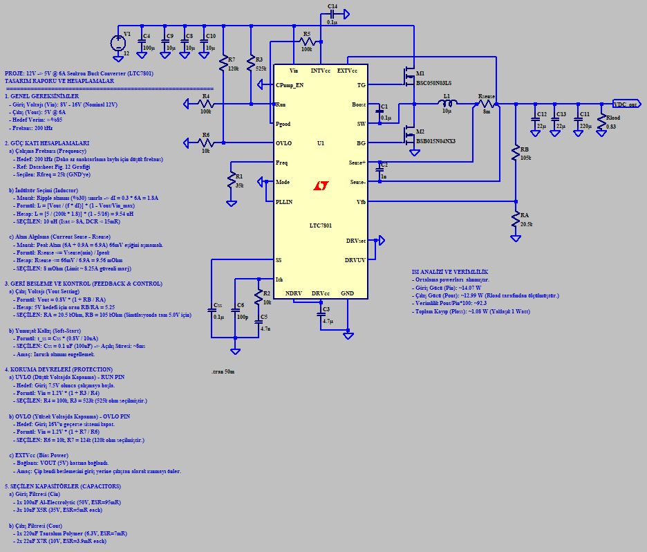
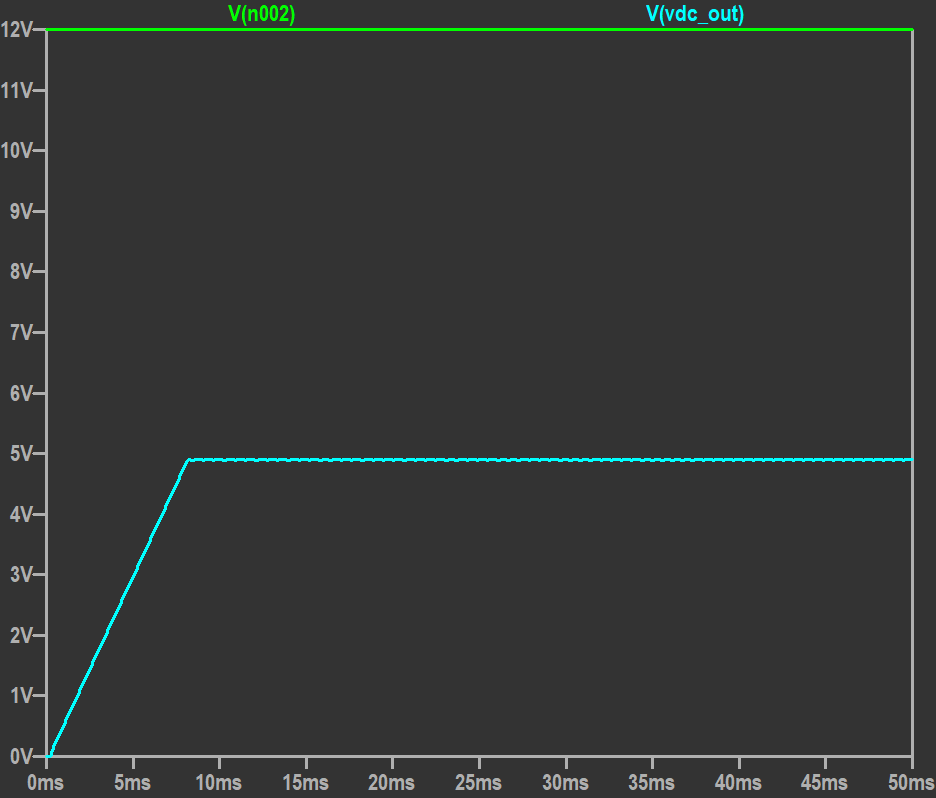
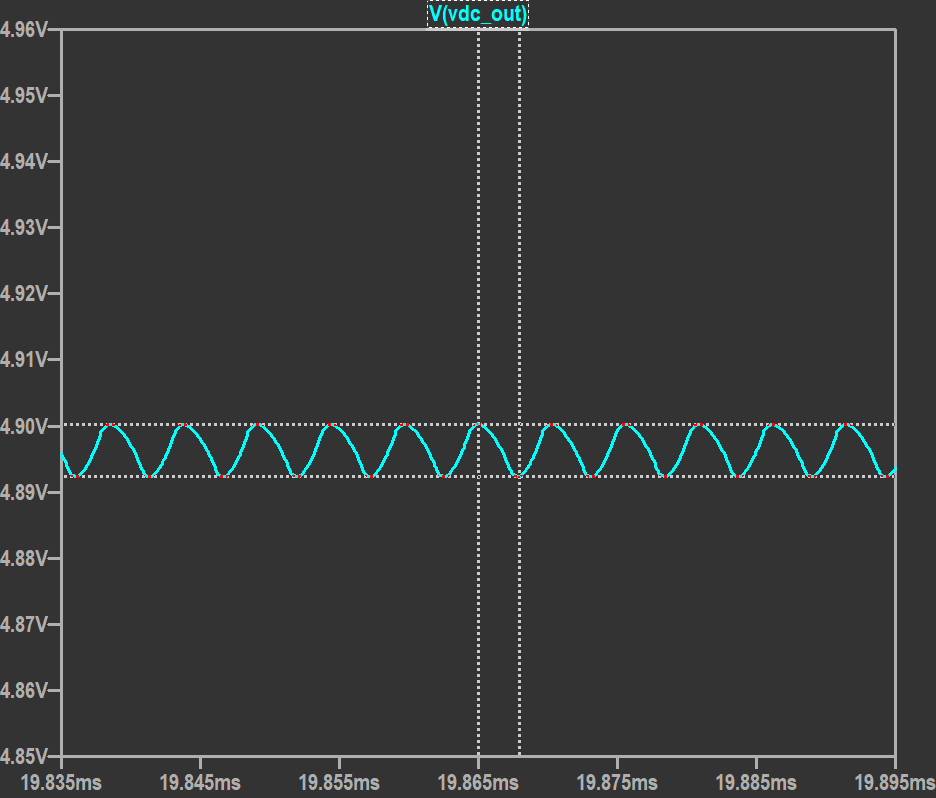

01
BİREYSEL PROJE
Yüksek Verimli DC-DC Buck Konvertör Tasarımı
Endüstriyel uygulamalar için tasarlanmış, yüksek akım kapasiteli ve verimlilik odaklı bir düşürücü (Buck) tip DC-DC dönüştürücü projesidir. Ana kontrolcü olarak LTC7801 kullanılmış; komponent seçimi ve devre kararlılığı simülasyonlarla doğrulanmıştır.
12 V
V_in
5 V
V_out
6 A
I_out
%92.3
Verim
200 kHz
f_sw
Teknik Özellikler ve Hesaplamalar
- Giriş/Çıkış Parametreleri: 12 V nominal girişten 5 V sabit çıkış gerilimi ve 6 A sürekli çıkış akımı hedeflenmiştir.
- Anahtarlama Frekansı: Anahtarlama kayıplarını optimize etmek için sistem 200 kHz'te çalışacak şekilde yapılandırılmıştır.
- Endüktör Seçimi: Akım dalgalanmasını (ripple) %30 sınırında tutmak için yapılan hesaplamalar sonucu 10 µH (I_sat > 8A) endüktör seçilmiştir.
- Verimlilik Analizi: Isıl analiz ve simülasyonlar sonucunda sistemin yaklaşık %92.3 verimle çalıştığı, toplam kaybın ~1 W olduğu gözlemlenmiştir.
- Koruma Devreleri: UVLO ve OVLO koruma eşikleri sırasıyla 7.5 V ve 16 V olarak ayarlanmıştır.
Kazanılan Yetkinlikler
- Güç elektroniği komponent seçimi (MOSFET, endüktör, kapasitör ESR hesaplamaları).
- LTspice üzerinde gelişmiş simülasyon ve verimlilik analizi.
- Geri besleme (feedback) ve kontrol döngüsü tasarımı.


